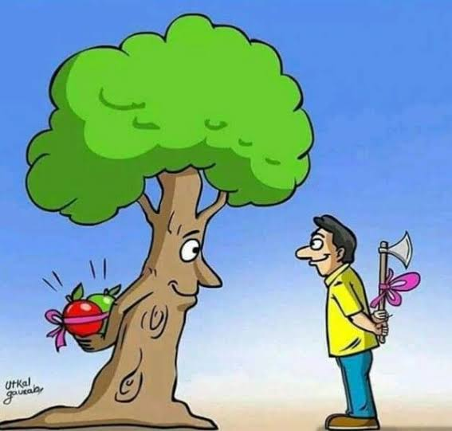
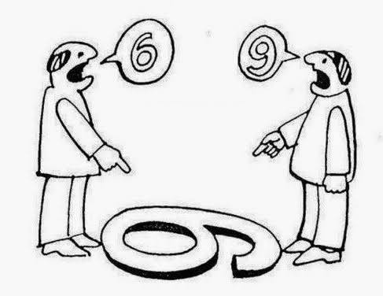

COLEGIO DE ESTUDIOS CIENTIFICOS Y TECNOLOGICOS DEL ESTADO DE MEXICO PLANTEL IXTLAHUACA
celia romero pichardo
Gustavo Martinez Erasmo
Grupo:402 Num de lista:16
Elaborado por:
Gustavo Martinez Erasmo
fecha de Elaboracion:
15 de enero de 2024.
Hora:
11:15 a.m. febrero 2024-agosto 2025
lecciones costruyete
leccion:7
¿tengo prejuicios?
leccion:8
Empatia poniendome en los zapatos del otro
leccion:9
hacer el bien sin mirar a quien

leccion:10
perspectiva y contextos diferentes

leccion:11
¿Quienes participamos?
leccion:12
Pensar en grande decirnos a actuar

(5).jpeg)